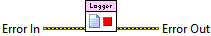

Error In describes error conditions that occur before this node runs. With the following execption, this input provides standard error in functionality.
This node runs normally even if an error occurred before this node runs.
Stops writing logging statements and closes the default logging file.

|
|
Error In describes error conditions that occur before this node runs. With the following execption, this input provides standard error in functionality. This node runs normally even if an error occurred before this node runs. |
|
|
Error Out contains error information. This output provides standard error out functionality. |